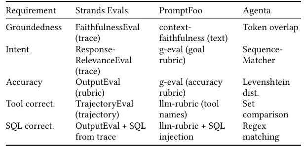
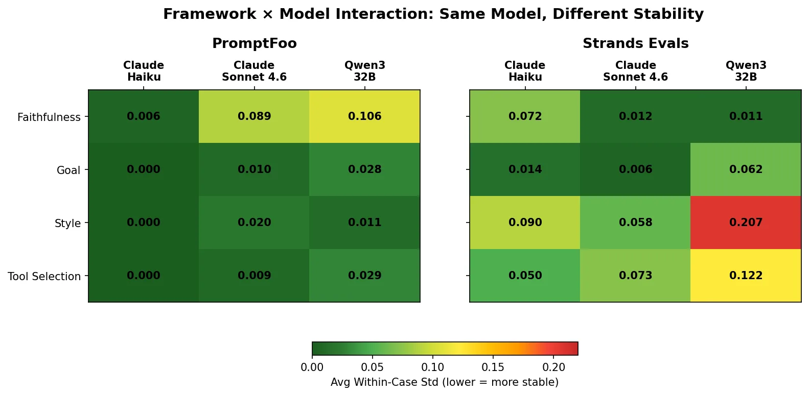
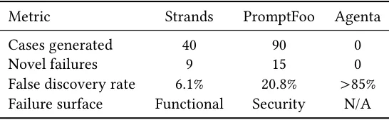

O Problema da Avaliação de Agentes em Produção
A implementação de agentes baseados em LLMs para análise empresarial, que geram SQL, invocam ferramentas e sintetizam respostas sobre dados sensíveis, exige frameworks de avaliação confiáveis. Falhas nesses sistemas têm consequências operacionais diretas e frequentemente escapam à revisão manual. Em estudos anteriores, falhas silenciosas na geração de SQL — onde o código é sintaticamente válido mas semanticamente incorreto, retornando zero linhas — degradam a qualidade das decisões de negócios.
A maioria das equipes ainda depende de verificação aleatória (spot-checking), que é insuficiente. Este paper, de autores da Amazon, apresenta um estudo comparativo de três fases que avalia três paradigmas de avaliação distintos: julgamento baseado em LLM com acesso a traces completos, julgamento baseado em LLM apenas em texto com red-teaming, e heurísticas determinísticas. O objetivo é entender como esses frameworks se comportam em termos de estabilidade, detecção de riscos conhecidos e descoberta de riscos desconhecidos.
Metodologia: O Que foi Medido e Como
O estudo utilizou dois agentes de análise de cadeia de suprimentos da Amazon. O Agente A analisa previsões de demanda por categoria, enquanto o Agente B analisa prazos de entrega por produto, utilizando um interpretador de código e tabelas de grande escala. Para garantir uma comparação justa, todos os testes foram realizados em um ambiente de pesquisa controlado, utilizando rastros de execução congelados (frozen execution traces). Isso isolou a qualidade do framework de avaliação da variabilidade do agente em si.
Os três frameworks avaliados representam filosofias distintas. O Strands Evals é um juiz baseado em LLM que tem acesso ao trace completo de execução via OpenTelemetry. O PromptFoo é um juiz baseado em LLM que opera apenas com a saída de texto e contextos injetados, focado em red-teaming. O Agenta utiliza heurísticas determinísticas, operando apenas sobre representações de string, sem custo de LLM. A diferença arquitetural chave é a quantidade de informação disponível para o mecanismo de avaliação.

Fase 1: Estabilidade dos Mecanismos de Avaliação
A primeira fase mediu a estabilidade dos frameworks através de medições repetidas. Em um cenário de produção, se um teste passa em uma execução e falha na próxima sem mudanças no código, a avaliação é inútil para gates de CI/CD. Os autores mediram a consistência da decisão (se o veredito de pass/fail permanece o mesmo) e o desvio padrão dentro do caso. A maioria das configurações (97%) atingiu o limiar de estabilidade, mas com nuances importantes.
O Agenta, sendo determinístico, teve 100% de consistência de decisão e desvio padrão zero. No entanto, como veremos, essa estabilidade é enganosa porque o framework não consegue distinguir corretamente respostas abertas corretas de incorretas. O PromptFoo manteve alta estabilidade (92% de consistência), mas o Strands apresentou variabilidade maior (82% de consistência), especialmente quando combinado com modelos menos estáveis como o Qwen3. Isso demonstra que a estabilidade é uma propriedade do par (framework, modelo), não apenas do modelo.

Fase 2: Detecção de Riscos Conhecidos
Na segunda fase, 72 casos de teste com ground-truth foram avaliados para medir a capacidade de detecção de falhas conhecidas. O Strands Evals alcançou o melhor equilíbrio entre precisão e recall (F1=0.896), capturando 90.9% das falhas com uma taxa de falsos positivos de 10.3%. O PromptFoo teve recall similar (87.9%), mas gerou 5 vezes mais falsos alarmes (48.7% de FPR). O Agenta teve recall de 100%, mas uma precisão terrível de 45.8%, indicando que ele marca tudo como falha para evitar erros, o que é inútil na prática.
A chave aqui é o acesso à informação. O Strands, ao ter acesso ao trace completo, pôde avaliar corretamente a correção da ferramenta (tool correctness) e a fidelidade (faithfulness), onde os outros falharam. O PromptFoo, vendo apenas texto, não pôde inferir quais ferramentas deveriam ter sido usadas ou se os dados referenciados eram os corretos. O Agenta falhou completamente em detectar erros semânticos, dependendo de expressões regulares que só capturam erros estruturais óbvios.
Fase 3: Descoberta de Riscos Desconhecidos
A terceira fase buscou falhas não antecipadas. Os frameworks geraram casos adversariais e funcionais. O resultado mais crítico foi que 24 falhas novel foram descobertas, com sobreposição zero entre os testes funcionais e os testes de segurança (red-teaming). Isso confirma que abordagens funcionais e de segurança são complementares e atacam superfícies de falha fundamentalmente diferentes.
Além disso, os mecanismos de avaliação baseados em LLM revelaram erros sutis que revisores humanos inicialmente perderam. Nove falhas de ground-truth foram inicialmente rotuladas incorretamente como corretas pelos humanos, mas foram corrigidas após a flaguação pelos evaluators automatizados. Isso sugere que LLMs bem configurados podem atuar como um segundo par de olhos mais rigoroso para padrões de erro complexos.

Limitações e Escopo do Estudo
É crucial notar que este estudo foi realizado em um ambiente de pesquisa controlado com traces congelados, não em um deploy de produção em tempo real. A estabilidade observada pode variar em ambientes de alta concorrência ou com latência de rede. Além disso, a variabilidade do Strands com certos modelos (como Qwen3) indica que a escolha do modelo judge é crítica. O estudo não avalia o custo computacional em escala massiva, embora o Agenta seja notado por ter custo zero de LLM.
Outra limitação é o viés dos avaliadores humanos na Fase 2. O labeling foi feito por poucos especialistas, o que pode introduzir subjetividade. No entanto, o fato de os evaluators automatizados corrigirem humanos sugere que a automação pode reduzir esse viés em casos de erros sutis.
Conclusão: Uma Estratégia em Camadas
Os autores recomendam uma estratégia de dois frameworks. Use o Strands (ou equivalente trace-based) para avaliação funcional abrangente, pois ele captura erros semânticos e de ferramenta que text-only perde. Use o PromptFoo (ou equivalente red-teaming) para validação de segurança, pois ele descobre vulnerabilidades de vazamento de dados que testes funcionais ignoram.
Heurísticas determinísticas como o Agenta podem ser úteis para checks rápidos de sintaxe, mas não devem ser a única linha de defesa. A informação disponível para o avaliador determina a qualidade da avaliação. Sem acesso ao trace, você cega o avaliador para a maior parte da complexidade do agente.
O que fica
- O acesso à informação determina a qualidade da avaliação: traces completos capturam erros semânticos que avaliações baseadas apenas em texto não veem.
- Avaliações funcionais e de segurança (red-teaming) são complementares e descobrem falhas distintas, com sobreposição zero nos testes realizados.
- Avaliações determinísticas são estáveis mas cegas a erros abertos; LLMs como juiz são mais ruidosos mas muito mais precisos na detecção de nuances.
- A estratégia recomendada combina avaliação baseada em trace para funcionalidade e red-teaming adversarial para validação de segurança.
Paper original: Comparative Analysis of Agent Evaluation Frameworks: Stability, Detection, and Discovery in Enterprise Analytics Agents
Comentários
Nenhum comentário ainda. Seja o primeiro.